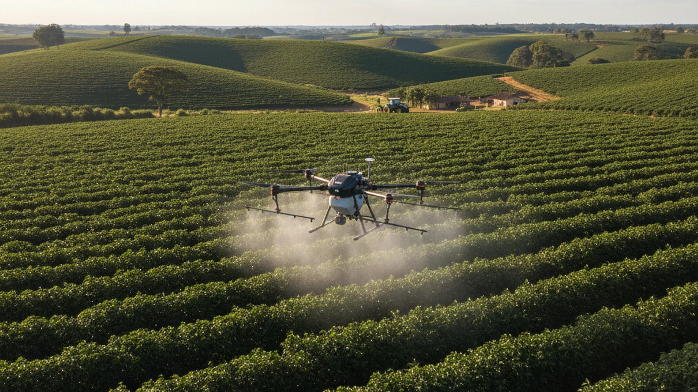
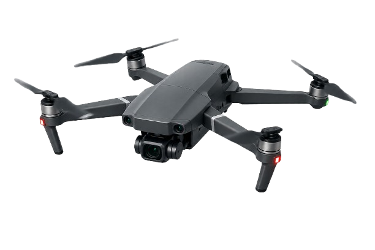

Autenticação do Sistema
Do solo ao código
Inicie a coleta para analisar a saúde da terra.


Atualmente, os drones são vitais na agricultura de precisão. Eles reduzem custos em até 30%, permitindo a aplicação localizada de insumos e identificando pragas antes mesmo de serem visíveis a olho nu, garantindo uma colheita mais sustentável e produtiva.
Gerenciamento hídrico via sensores de solo.
Status: Aguardando...
Status: Aguardando...
Status: Aguardando...
Decisão: ---
Insira o e-mail para receber o PDF técnico.
A irrigação inteligente utiliza protocolos de rede para interligar sensores de solo a atuadores de vazão. Através do monitoramento em tempo real, é possível reduzir o consumo de energia e água em até 60%, aplicando a lâmina d'água exata conforme a necessidade da planta.
Manual de Irrigação (EMBRAPA) ↗Veículos Aéreos Não Tripulados processam imagens multiespectrais para gerar mapas de vigor vegetativo (NDVI). Essa tecnologia permite detectar falhas de plantio e focos de pragas com precisão cirúrgica, permitindo uma intervenção localizada muito antes dos sintomas serem visíveis ao olho humano.
Drones na Prática (YouTube) 🎥A análise química digital de NPK (Nitrogênio, Fósforo e Potássio) permite a chamada "Fertirrigação Variável". O produtor recebe um diagnóstico bioquímico individual de cada setor da fazenda, podendo corrigir o solo com os nutrientes exatos, evitando o desperdício de fertilizantes e a contaminação do lençol freático.
Blog Telemetria Agrícola 📄Algoritmos de Deep Learning e Visão Computacional analisam padrões de crescimento e dados meteorológicos históricos para prever a produtividade da safra. A IA AgroCode atua no processamento desses dados para oferecer uma assertividade matemática de até 98% na tomada de decisão sobre o momento ideal de colheita.
Agro Intelligence News ↗